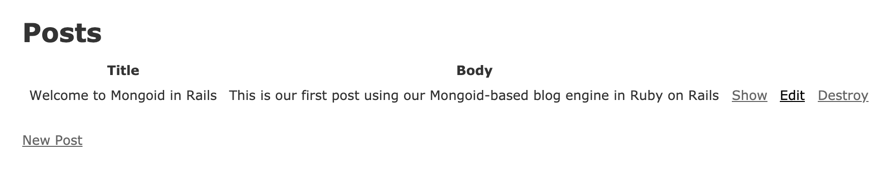
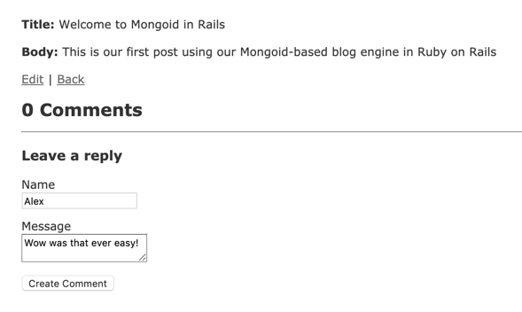

Getting Started (Rails)¶
On this page
New Application¶
This section shows how to create a new Ruby on Rails application using Mongoid for data access. The application will be similar to the blog application described in the Ruby on Rails Getting Started guide, however using Mongoid instead of ActiveRecord as the database adapter.
Note
This guide assumes basic familiarity with Ruby on Rails. To learn more about Ruby on Rails, please refer to its Getting Started guide or other Rails guides.
Install rails¶
We will use a Rails generator to create the application skeleton.
In order to do so, the first step is to install the rails gem:
Create New Application¶
Use the rails command to create the application skeleton, as follows:
Note
You may receive a warning like this:
Disregard it as we will be taking care of gem installation in a moment.
We pass --skip-active-record to request that ActiveRecord is not added
as a dependency, because we will be using Mongoid instead. Additionaly
we pass --skip-bundle because we’ll be modifying the Gemfile to
add the mongoid dependency.
If you intend to test your application with RSpec, you can instruct the
generator to omit default Rails test setup by passing --skip-test
and --skip-system-test options:
Create Git Repo¶
While not required, we recommend creating a Git repository for your application:
Commit your changes as you are following this tutorial.
Add Mongoid¶
1. Modify the Gemfile to add a reference to the
mongoid gem:
Note
Mongoid 7.0.5 or higher is required to use Rails 6.0.
- Install gem dependencies:
- Generate the default Mongoid configuration:
This generator will create the config/mongoid.yml configuration file,
which is used to configure the connection to the MongoDB deployment.
Note that as we are not using ActiveRecord we will not have a database.yml
file.
Run MongoDB Locally¶
The configuration created in the previous step is suitable when a MongoDB server is running locally. If you do not already have a local MongoDB server, download and install MongoDB.
While the generated mongoid.yml will work without modifications,
we recommend reducing the server selection timeout for development.
With this change, the uncommented lines of mongoid.yml should look
like this:
Use MongoDB Atlas¶
Instead of downloading, installing and running MongoDB locally, you can create a free MongoDB Atlas account and create a free MongoDB cluster in Atlas. Once the cluster is created, follow the instructions in connect to the cluster page to obtain the URI. Use the Ruby driver 2.5 or later format.
Paste the URI into the config/mongoid.yml file, and comment out the
hosts that are defined. We recommend setting the server selection timeout to 5
seconds for development environment when using Atlas.
The uncommented contents of config/mongoid.yml should look like this:
Other Rails Dependencies¶
If this is the first Rails application you are creating, you may need to install Node.js on your computer. This can be done via your operating system packages or by downloading a binary.
Next, if you do not have Yarn installed, follow its installation instructions.
Finally, install webpacker:
Run Application¶
You can now start the application server by running:
Access the application by navigating to localhost:3000.
Add Posts¶
Using the standard Rails scaffolding, Mongoid can generate the necessary model, controller and view files for our blog so that we can quickly begin creating blog posts:
Navigate to localhost:3000/posts to create posts and see the posts that have already been created.
Add Comments¶
To make our application more interactive, let’s add the ability for users to add comments to our posts.
Create the Comment model:
Open the Post model file, app/models/post.rb, and add a has_many
association for the comments:
Open the Comment model file, app/models/comment.rb, and change the
generated embedded_in association to belongs_to:
Open the post show view file, app/views/posts/show.html.erb, and add
a section rendering existing comments and prompting to leave a new comment:
Open the comment form file and change the type of field for :message
from text_field to text_area, as well as the type of field for
:post_id from text_field to hidden_field. The result
should look like this:
Create a partial for the comment view, app/view/comments/_comment.html.erb
with the following contents:
You should now be able to leave comments for the posts:
Source Code¶
The complete source code for this application can be found in the mongoid-demo GitHub repository.
Existing Application¶
Follow these steps to switch an existing Ruby on Rails application to use Mongoid instead of ActiveRecord.
Dependencies¶
Remove or comment out any RDBMS libraries like sqlite, pg etc.
mentioned in Gemfile, and add mongoid:
Note
Mongoid 7.0.5 or higher is required to use Rails 6.0.
Install gem dependencies:
Loaded Frameworks¶
Examine config/application.rb. If it is requiring all components of Rails
via require 'rails/all', change it to require individual frameworks:
Note
At this time ActiveStorage requires ActiveRecord and is not usable with Mongoid.
ActiveRecord Configuration¶
Review all configuration files (config/application.rb,
config/environments/{development,production.test}.rb) and remove or
comment out any references to config.active_record and
config.active_storage.
Stop Spring¶
If your application is using Spring, which is the default on Rails 6, Spring must be stopped after changing dependencies or configuration.
Note
Sometimes running ./bin/spring stop claims to stop Spring, but does
not. Verify that all Spring processes are terminated before proceeding.
Note
Sometimes Spring tries to load ActiveRecord even when the application
contains no ActiveRecord references. If this happens, add an ActiveRecord
adapter dependency such as sqlite3 to your Gemfile so that
ActiveRecord may be completely loaded or remove Spring from your
application.
Mongoid Configuration¶
Generate the default Mongoid configuration:
This generator will create the config/mongoid.yml configuration file,
which is used to configure the connection to the MongoDB deployment.
Review the sections Run MongoDB Locally and Use MongoDB Atlas
to decide how you would like to deploy MongoDB, and adjust Mongoid
configuration (config/mongoid.yml) to match.
Adjust Models¶
If your application already has models, these will need to be changed when migrating from ActiveRecord to Mongoid.
ActiveRecord models derive from ApplicationRecord and do not have
column definitions. Mongoid models generally have no superclass but must
include Mongoid::Document, and usually define the fields explicitly
(but with `Dynamic Fields`_ may be used instead of explicit field definition).
For example, a barebones Post model may look like this in ActiveRecord:
The same model may look like this in Mongoid:
Or like this with dynamic fields:
Mongoid does not utilize ActiveRecord migrations, since MongoDB does not require a schema to be defined prior to storing data.
Data Migration¶
If you already have data in a relational database that you would like to transfer to MongoDB, you will need to perform a data migration. As noted above, no schema migration is necessary because MongoDB does not require a predefined schema to store the data.
The migration tools are often specific to the data being migrated because, even though Mongoid supports a superset of ActiveRecord associations, the way that model references are stored in collections differs between Mongoid and ActiveRecord. With that said, MongoDB has some resources on migrating from an RDBMS to MongoDB.
Rails API¶
The process for creating a Rails API application with Mongoid is the same
as when creating a regular application, with the only change being the
--api parameter to rails new. Migrating a Rails API application to
Mongoid follows the same process described above for regular Rails applications.
A complete Rails API application using Mongoid can be found in the mongoid-demo GitHub repository.